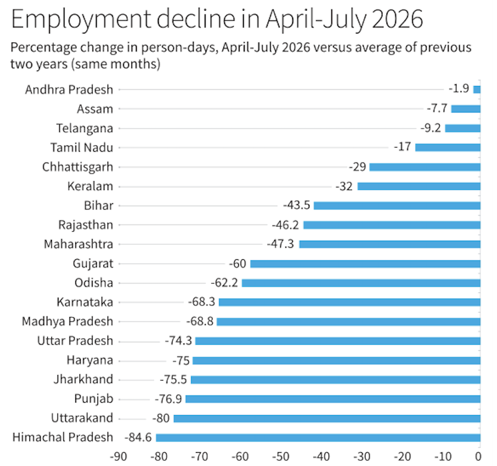

August 26 2026
The Problem with VB-G RAM G Act, 2025
The 2025 Winter Session of Parliament was a pivotal backdrop for evaluating Indian democracy and its centre-state federal relationship. Last year, it passed a total of eight bills in both the Rajya Sabha and the Lok Sabha, including a widely appreciated bill, the Right to Disconnect Bill 2025, and some profoundly contentious ones, namely the SHANTI Bill 2025 and the VB-G RAM G Bill 2025. Exhaustive debates and reciprocation of barbs defined the winter session. But amidst the commotion, Parliament failed to adequately scrutinize a bill that has ultimately left our rural employment system in an abysmal condition. At the heart of the debate is the replacement of the
Wage Rates and MGNREGA
Wage rates are an indispensable parameter for the employment guarantee schemes. While a relatively high wage rate incentivizes participation, a low wage rate can attenuate enthusiasm among the workers. MGNREGA itself is the best example of this dynamic system. Section 6 of this act comprises two important clauses that deal with the minimum wage rates. The first clause, Section 6(1), empowers the central government to notify the wage rates for different states, while Section 6(2) states that until the wage rates under Section 6(1) is notified, the state specified minimum wages for agricultural labourers shall be followed. MGNREGA came into effect on February 2, 2006 and until 2009, the central government refrained from notifying wage rates under Section 6(1). Therefore, according to Section 6(2), the state-specific minimum wages were applied. During the timeline of 2006-2009, MGNREGA was extensively successful and attracted a huge number of workers. The credit of this initial success belongs entirely to the individual state policies. In some states, the wage rate for agricultural labourers was even higher than the local market rates. For instance, we observed a sharp increase in the minimum wage rates in Uttar Pradesh in 2007-08, from ₹58 to ₹100 per day.
The problem started in 2009, when the Centre decided to notify wage rates under Section 6(1). Initially, the central government set the wage rates at ₹100 per day in all states, which was quite acceptable and rational. However, over time, this clause enabled the government to moderate wage rates, which ultimately resulted in frozen MGNREGA wages in the long run. Until the enactment of the VB-G RAM G Act, MGNREGA wages had been revised only to the extent of price increases in every state. Basically, Section 6(1) had a detrimental outcome on MGNREGA that gradually made the scheme unpopular among rural workers.
| State | Central Scheme Wage (FY 24-25 / FY 25-26) | State Statutory Agri Minimum Wage | Scheme vs. State Wage Gap |
|---|---|---|---|
| Himachal Pradesh | ₹236 – ₹300 | ~₹375 – ₹400 | High Deficit (~₹100–₹140) |
| Uttarakhand | ₹237 – ₹244 | ~₹360 – ₹380 | High Deficit (~₹120–₹140) |
| Punjab | ₹322 – ₹340 | ~₹410 – ₹430 | High Deficit (~₹80–₹100) |
| Jharkhand | ₹245 – ₹255 | ~₹350 – ₹370 | High Deficit (~₹100–₹120) |
| Haryana | ₹374 – ₹400 | ~₹425 – ₹440 | Moderate Deficit (~₹30–₹50) |
| Uttar Pradesh | ₹237 – ₹244 | ~₹360 – ₹380 | High Deficit (~₹120–₹140) |
| Madhya Pradesh | ₹243 – ₹252 | ~₹340 – ₹365 | High Deficit (~₹90–₹115) |
| Karnataka | ₹349 – ₹370 | ~₹390 – ₹420 | Moderate Deficit (~₹40–₹60) |
| Tamil Nadu | ₹319 – ₹335 | ~₹330 – ₹360 | Low Deficit (~₹15–₹30) |
| Telangana | ₹300 – ₹307 | ~₹310 – ₹330 | Near Parity (~₹10–₹20) |
| Assam | ₹249 – ₹256 | ~₹260 – ₹280 | Near Parity (~₹10–₹25) |
| Andhra Pradesh | ₹300 – ₹307 | ~₹310 – ₹325 | Near Parity (~₹5–₹15) |
In the aforementioned data, the widest divergence between the State-notified agricultural wage and the Central scheme wage is observed in Himachal Pradesh and Uttarakhand. Naturally, as state governments offered substantially higher wage rates, workers' preference for state-level employment policies remained entirely reasonable.
Flaws in VB-G RAM G Act
Now, when VB-G RAM G act 2025 was finally enacted on 1st July 2026, the Central Government was exorbitantly optimistic about its success. However, the employment report released for July dashed those hopes, revealing that the scheme's inaugural month had fallen sharply below expectations. From an introspective point of view, there are three fundamental flaws in this act, which are:
Continuation of Section 6(1)
The new legislative framework stubbornly retains the centralised wage-fixing mechanism inherited from its predecessor. The primary motive behind preserving Section 6(1) is the stark disparity between the Central scheme rates and the statutory minimum agricultural wages fixed by individual states. If the Centre were to surrender this notification power, Section 6(2) would inevitably trigger, compelling the exchequer to disburse wages aligned with state-notified agricultural minimums. In states like Himachal Pradesh, Uttarakhand, and Uttar Pradesh, where the deficit breaches ₹100 to ₹140 per day, adopting local minimums would cause central fiscal outlays to surge drastically. To circumvent this financial obligation, the Centre continues to insulate itself behind Section 6(1), deliberately depressing rural real incomes under the guise of uniform administrative discretion.
The Hindu Editorial, Employment Guarantee has slipped into limbo, J. Drèze and Md. Zameer, 19 August 2026. Minimum Wage Act, 1948
By perpetuating arbitrary wage notifications detached from actual living costs, the VB-G RAM G Act circumvents the foundational tenets of the Minimum Wage Act, 1948. Successive judicial pronouncements, including landmark directives of the Supreme Court, have held that paying anything less than the statutory minimum wage amounts to forced labour under Article 23 of the Constitution. Yet, the current apparatus relies on an indexation formula tethered to outdated consumption baskets, effectively legitimising state-sanctioned underpayment and depriving rural labour of their rightful statutory floor.Delay in Payment
The operational reality on the ground remains mired in bureaucratic inertia and technological bottlenecks. Layered validation protocols, erratic biometric authentication, and centralised fund-transfer orders continue to choke the liquidity conduit between New Delhi and gram panchayats. Weeks, often months, elapse before meager remuneration trickles into the accounts of daily-wage earners, completely eviscerating the compensatory clause for delayed disbursements and breaking the subsistence cycle of vulnerable households.
The Erratic Future
The VB-G RAM G Act, in its essence, is not a visionary reimagining of social security, but a masterclass in bureaucratic re-branding engineered to mask state abdication. What was heralded as an epoch-making leap toward a